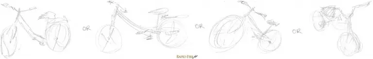
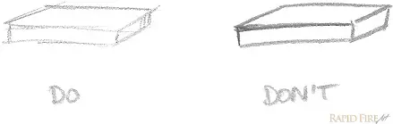

Dibujar es simplemente el proceso de superponer formas, líneas, garabatos y valores uno encima del otro hasta obtener el resultado deseado
Bocetar es el proceso de garabatear una idea en papel. Te permite plasmarla rápidamente, ahorrando tiempo a largo plazo. ¡Es una excelente manera de generar ideas!
Lo mejor es usar líneas fluidas, dibujadas con suavidad y ligereza. Para ello, ajusta el agarre del lápiz para que la mano esté relajada en lugar de tensa. Si sueles cansar la mano después de dibujar durante menos de una hora, probablemente la estés agarrando con demasiada fuerza.
No importa si tus líneas son irregulares, porque quizás aún no estés acostumbrado a dibujar ciertas líneas y curvas. Dibujar es muy diferente a escribir, así que necesitarás mejorar tu memoria muscular dibujando con la mayor frecuencia posible. Al hacer un boceto inicial, conviene dejar atrás el perfeccionismo y centrarse en las formas generales. Piensa en el tamaño, la forma, el ángulo, etc. ¡Lo último en lo que debes pensar es en los detalles!
Comienza dibujando un círculo de forma libre. No te preocupes si no es perfecto; la idea es practicar y mejorar tu control del lápiz.
Ahora, trabaja en refinar la forma del círculo. Puedes hacer esto dibujando sobre el círculo inicial para suavizar las líneas y hacer que la forma sea más redonda. Recuerda mantener las líneas ligeras para que puedas ajustarlas fácilmente si es necesario.
Continúa perfeccionando la forma del círculo. Observa las áreas que necesitan más trabajo y ajusta las líneas en consecuencia. Con la práctica, notarás que tus círculos se vuelven más uniformes y precisos.
Finalmente, una vez que estés satisfecho con la forma del círculo, puedes definirlo con líneas más oscuras y claras. Esto ayudará a que el círculo se destaque y le dará un aspecto más terminado.
Recuerda que la práctica constante es clave para mejorar tus habilidades de dibujo. ¡No te desanimes si al principio no sale como esperas! Cada dibujo es un paso hacia adelante en tu aprendizaje.